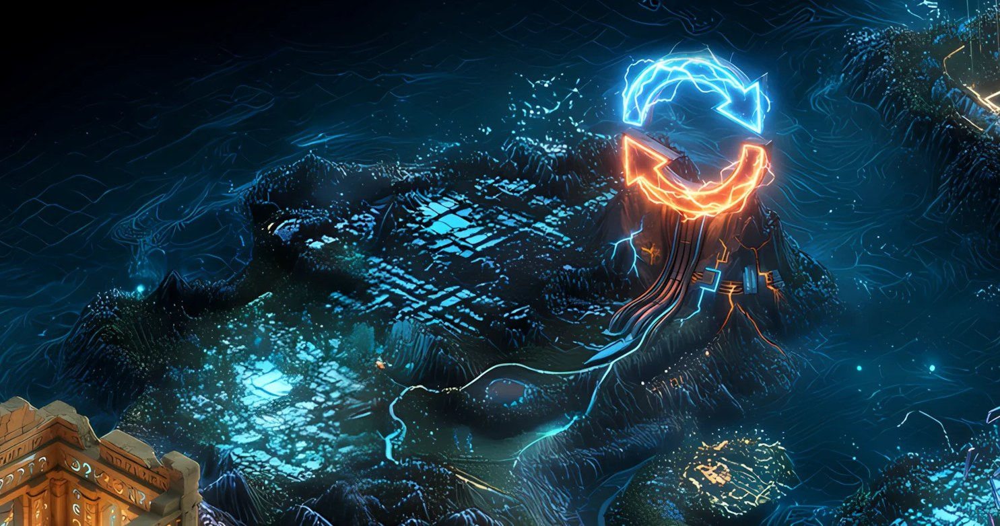

Record // OUTAGE
MOUNT RESTART

The network went down. Then down again. And every time, it clawed its way back.
What happened
Across 2021–2022 Solana suffered several full or partial outages — overwhelmed by bot traffic, a resource-exhaustion bug, and surging demand — each requiring validators to coordinate a restart of the chain.
Why Solana remembers it
Mount Restart is a scar and a proof point at once: not a perfect uptime record, but a network and operator community that kept recovering and hardening after every fall.
On the map
A mountain rebuilt on its own rubble — resilience as terrain.
Evidence
VERIFIED //Solana: 9-14 network outage overview
VERIFIED //Solana: 09-30-22 outage report